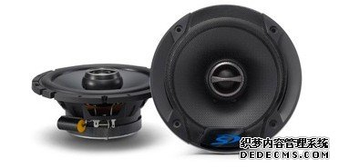

SPS-610-G6.5英寸(16.5cm)同轴两路扬声器
来源：未知 作者：admin 时间：2014-04-12 13:59

丹拿Esotec系列中/低音单元所应用核心技术与家用音响和专业监听音响是完全相同的。75mm大口径音圈得以承受超强功率。振膜与防尘罩一体化（硅酸镁高分子材质）的设计，使得丹拿帮助众多音乐爱好者实现了梦寐以求的低失真、还原音乐本色的愿望。
TH系列扬声器
为了创造出一个令人叹为观止、一流的音响系统，所有的声音组件都要遵从最高标准的设计，TH系列喇叭正是为THESIS系列功放提供最佳播放效果而设计。在过去的几年中，THESIS的表现无疑印证了其在市场上的高端地位。今天，我们延续了THESIS产品的性能，推出TH系列喇叭，为顾客展现绝对完美的音质。
●经过优化设计的音盆和防尘罩
提供了很好的声音扩散角度。
●新特制的纸浆
纸浆中添加了玻璃纤维使得纸盆有很好的强度，使得音质显得柔和，还保留了纸盆传统音质的细腻。
●防止其振的镀锌网
在不影响音质的情况下保护喇叭。
●三层波浪橡胶折环
用于顶级高保真家庭音响，此折环的3层波浪设计和材料的选择确保了声音的对称性和还原性。
●铝质扁平音圈线
最紧凑的结构加上最轻的音圈重量，单层绕组得最佳散热效果。
●高精度对称磁路系统
两个铝质短路环补偿音圈电感。
相关阅读：
- DLS-Classsic(经典)系列：125同轴扬声器2014-04-12
- SPS-610-G6.5英寸(16.5cm)同轴两路扬声器2014-04-12
- DLS-Classsic(经典)系列：B6A两分频扬声器2014-04-12